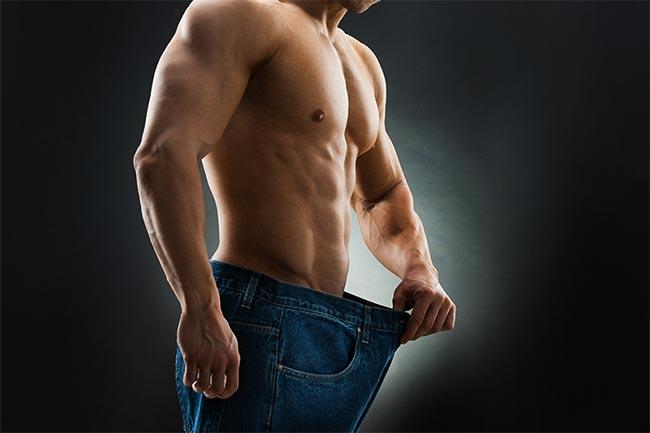

Conseils simples et efficaces pour perdre du gras durablement.
Pour perdre du gras efficacement, il faut combiner alimentation équilibrée et activité physique régulière. L’objectif est de créer de bonnes habitudes sur le long terme, pas de faire un régime extrême.

La perte de gras commence par le déficit calorique : consommer moins de calories que ce que tu dépenses. Choisis des aliments sains et reste actif (marche, sport, etc.).
Footing, vélo, natation, corde à sauter et marche rapide sont les plus efficaces. Le plus important est la régularité et l’intensité modérée.
La clé est la régularité. Mange équilibré, dors bien et évite les excès. Le sommeil est essentiel pour récupérer et progresser.